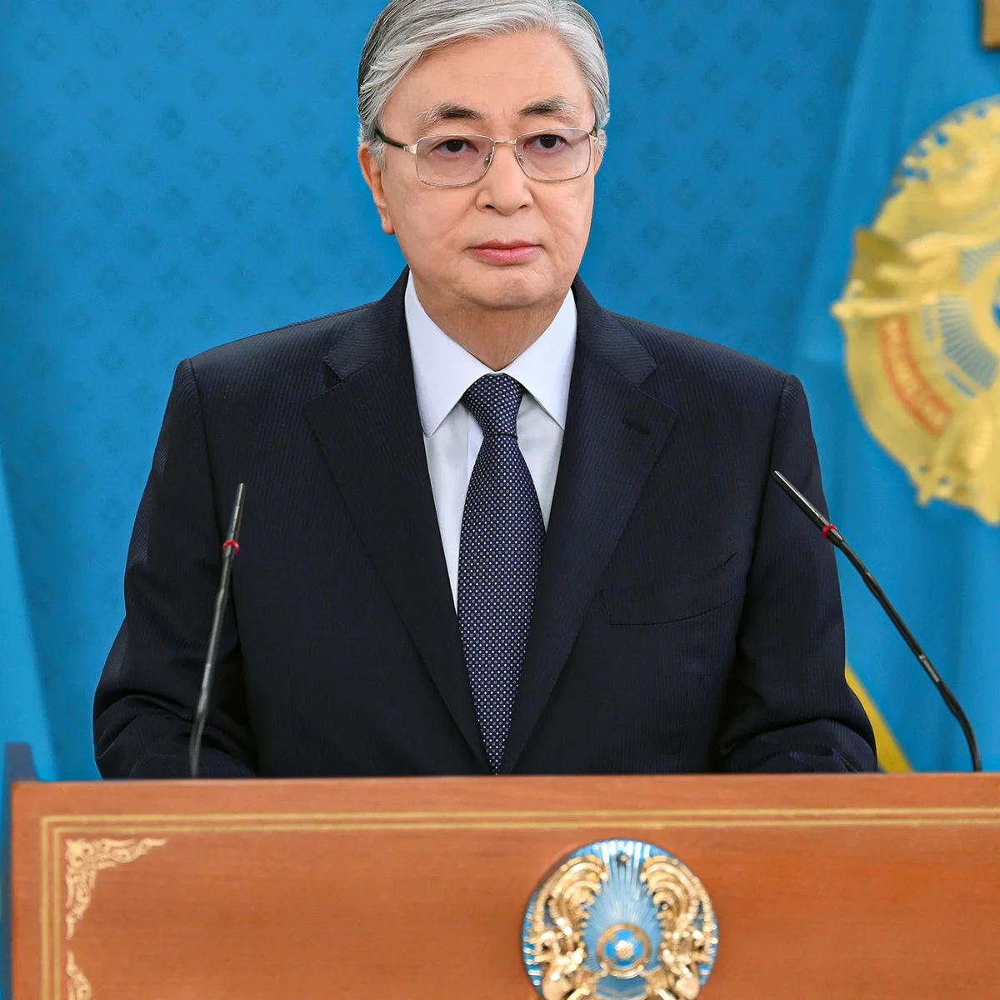
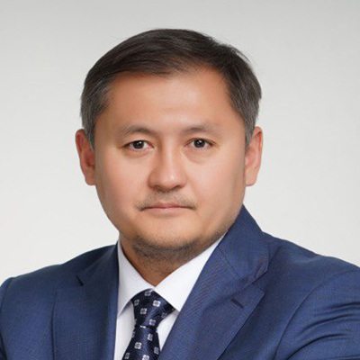
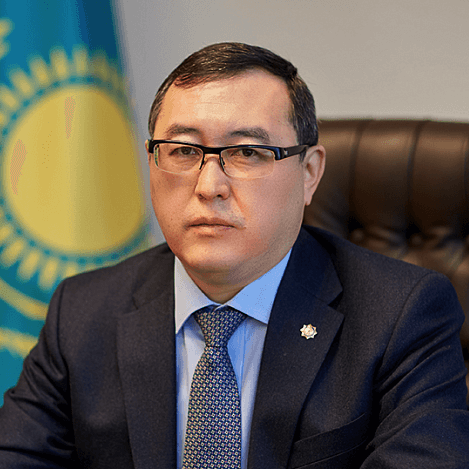
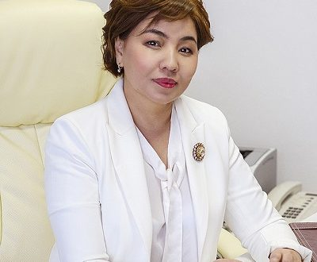

Kassym – Jomart Tokayev
President of the Republic of Kazakhstan
On September 05, 2023, the Head of State Kassym-Jomart Kemelovic visited SDU University, where he got
acquainted with the education of the university and scientific initiatives of our students.

Sayasat Nurbek
Minister of Science and Higher Education
Minister of Science and Higher Education Sayasat Nurbek took part in the opening ceremony of a modern
library at SDU University. At the opening ceremony of the library, the Minister noted that the spiritual
center will give impetus to quality education, personal development of students.

Marat Sultangaziyev
Akim of Almaty region
Akim of Almaty region Marat Sultangaziyev lectured to students of SDU University on the topic:
The first lecture of the work of the school of young public service “Samgau”, “How does the akimat work
in practice and how it affects the development of the economy of the country?”.

Bibigul Zheksenbai
Deputy of the Senate of the Parliament
Deputy of the Senate of the Parliament of the Republic of Kazakhstan Bibigul Zheksenbai held a meeting with
the leadership and students of SDU University. During the meeting with students of journalism, the deputy
emphasized the importance of activism, given that today every citizen has the opportunity to participate in
the discussion in the adoption of the law.